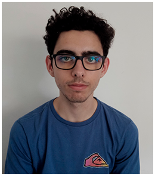

Josep Lleal - Engine & Gameplay Programmer

Welcome! My name is Josep and I am an Engine and Game programmer of The Witcher: Ties of Destiny. During this project I have realised what really makes me happy when developing video games, working as a gameplay programmer. I have liked working as an Engine programmer since I learned tons of new things about how video games really work internally but, being honest, I have enjoyed more working as a gameplay programmer. The process of thinking how to do something, implementing it and playing with the results is a unique feeling.
PROJECT CONTRIBUTION
When we started building the engine I was in charge, alongside Victor Chen, of making the Animation System which main features are skinning, interpolation between keyframes and blending between animations. Once the engine had its key features I was moved to gameplay programmer to develop one of the enemies and make a cinematic as an introduction of the second level. In addition, I was the Lead of the pacing team whose main goal was ensuring good feeling between the characters and enemies. As a lead my role was to coordinate and give the feedback of the QA sessions to all the members.
Here you have the list of all my contributions:
- Animation System: Features skinning, interpolation between keyframes and blending between animations.
- Animator Tool: Helped Victor develop the animator to streamline the importation of animations.
- Engine bug fixing: For the engine I also helped solving issues about the animation system mainly.
- Archer: The archer is a long range enemy that deals significant damage with his arrows. If you get closer to him he will punch and kick you as his last resort.
- Spawners: Developed the spawner with some customizations like the spawn radius, activation distance, number of enemies to spawn, spawn ratio and enemy to spawn.
- Spawners placement: Alongside Adrián I placed spawners strategically across the second level making enemy compositions while adding difficulty to the level.
- Forest Cinematic: Programmed the cinematic as an introduction to the forest level.
- Particles: Helped the particles team making the fireflies and the kikimora scream.
- QA: QA sessions and lots of bug fixing.